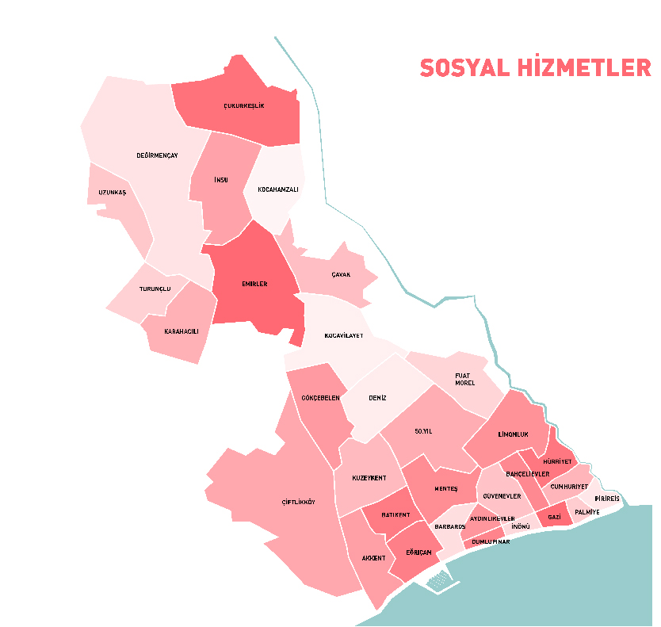

Mersin Yenişehir Belediyesi
Mahalle Talep Oranları Haritası
Ulaşım
Çevre & Temizlik
Açık Alan Düzenlemeleri
Ekonomi
Sosyal Hizmetler
Spor
Sosyal Tesisler
Güvenlik
Ekoloji
Kurumsal İşleyiş
Su & Kanalizasyon
Eğitim
Bakım & Onarım
Sağlığa erişim
Enerji & Telekomünikasyon
İmar & Tapu
Sosyal Etkinlikler

Yenişehir mahalle sınırları